AI Academy · Level 4 · Grade 9 · Week 24 · Student lesson
Train, Validation, Test
Learn to understand, design, build, test and explain AI systems responsibly.
Project: Responsible Plant Classifier
Before you start
Week 8: split by the independent unit before fitting transforms.
Plan time to read, investigate and explain. Keep predictions separate from observations.
Student lesson · 1 of 14
Your mission
Your learning target
I can select a model using a declared validation rule.
I can keep training, validation and test roles separate.
I can recognize repeated validation as development.
Remember before reading
Close your notes first. A rough first answer helps us choose the right starting point; it is not a score for your ability.
Without opening the old lesson, explain one key idea from Hold Out Test Data. Give an example and a mistake that the idea helps you avoid.
Without opening the old lesson, explain one key idea from Absolute Error and MAE. Give an example and a mistake that the idea helps you avoid.
Without opening the old lesson, explain one key idea from Error Analysis. Give an example and a mistake that the idea helps you avoid.
After trying, check the relevant lesson or ask your teacher. Change the part of your explanation that the evidence shows was wrong.
Training fits parameters, validation chooses settings, and testing estimates final performance after choices are frozen.
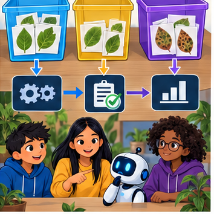
Builder name and experiment date:
Readiness for the connected explanation
Which data fitted the line last week?
This week’s end goal
By the end, I can explain train, validation, test using a traced example and a stated limitation.
Student lesson · 2 of 14
Notice the evidence
PICTURE ENTRY
Notice → Predict → Explain
Begin with visible evidence; do not explain more than the picture and information support.
Name three visible details without interpreting them.
Predict the data, model, or evaluation decision being made.
Identify one hidden assumption that could change the result.
State what evidence would confirm or reject your prediction.
My prediction and supporting evidence:
A closer explanation
Fitting and selecting answer different questions. Training adjusts parameters. Validation helps choose settings or model families. A final test estimates the performance of the frozen development process on held-out examples. Keep related records in the same split when separate rows could reveal the same source.
Use fictional classroom data throughout this investigation. Keep the task, units, reference labels and data split visible as you reason. Earlier weeks supplied the model-building process; this week examines validation and model selection.
Student lesson · 3 of 14
See how it works
ML MECHANISM
Input → Model → Evidence
Trace the information, fitted behavior, and evaluation proof separately.
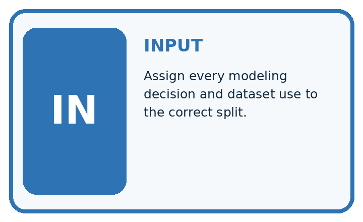
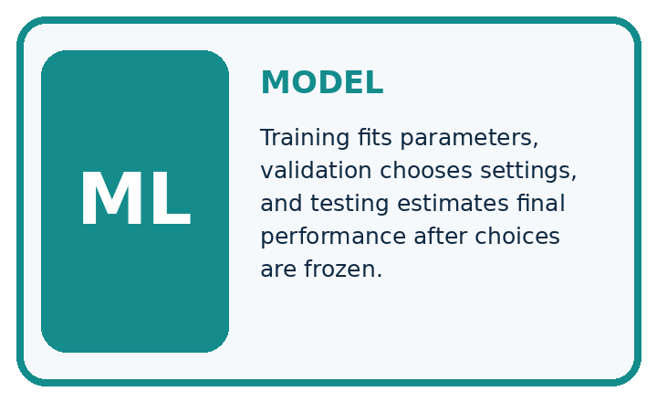
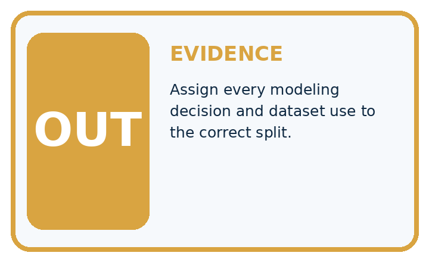
QUESTION Assign every modeling decision and dataset use to the correct split.
MODEL IDEA Training fits parameters, validation chooses settings, and testing estimates final performance after choices are frozen.
PROOF NEEDED Use an unseen case, visible calculation, error analysis, and a stated limitation.
Draw a fresh data → model → prediction → evaluation trace:
A closer explanation
Three candidates have training MAE A=1, B=0, C=2 and validation MAE A=3, B=5, C=3. The declared rule is smallest validation MAE, then simpler model, with A simpler than C. Choose A. B fits training perfectly but does worse on validation. The final test remains unopened.
Before continuing, underline the decision rule and circle the evidence that supports the conclusion. Explain the example to a partner without replacing the counts or conditions with a stronger claim. Keep the distinction between an observed result and a proposed next step.
Connect the picture and the explanation
Point to the input, the deciding step and the result in this week’s visual. Explain the same step in ordinary words. A picture helps when you can say what each part represents.
Student lesson · 4 of 14
Compare the cases
EVALUATION DESIGN
Four Tests, Four Kinds of Evidence
A system is not understood until it survives more than one comfortable example.


NORMAL Expected data and expected behavior.
BOUNDARY Value close to a threshold, ambiguous label, or uncertain prediction.
MISSING Necessary field, label, source, or measurement is unavailable.
SHIFTED New lighting, species, device, subgroup, or time condition.
Which case most threatens today's claim, and why?
Change one thing in the pictured case
Change: A and B both have validation MAE2 cm; A is simpler under a predeclared tie rule.
Prediction: Select A using the predeclared simpler-model tie-break.
Reason: The validation errors tie, so the stated second a = ry rule decides without consulting final data.
Student lesson · 5 of 14
Words that unlock the idea
VOCABULARY
Words You Can Calculate and Defend
A definition matters when it lets you interpret a new dataset, model, or result.
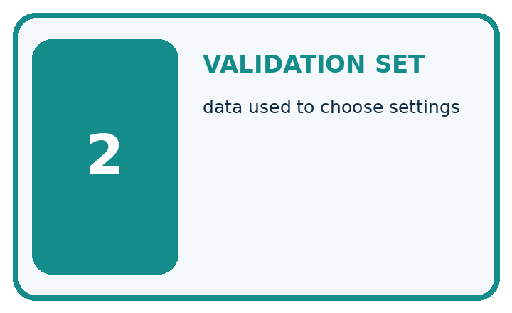
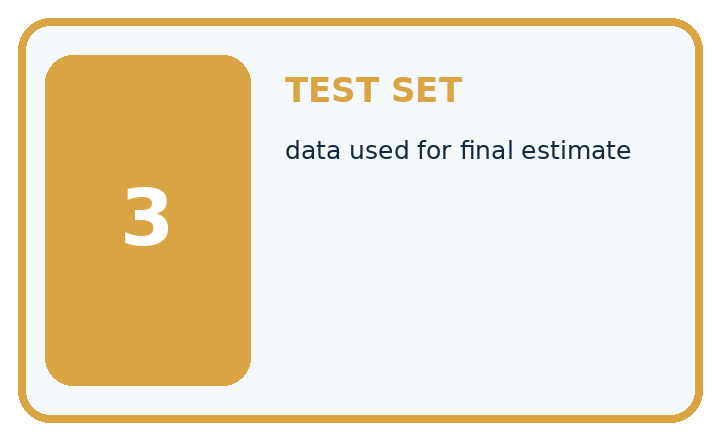
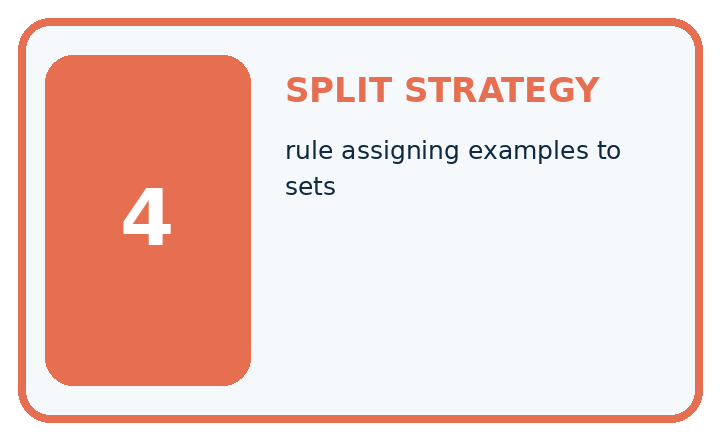
| Term | Precise meaning | My ML example |
|---|---|---|
| training set | data used to fit parameters | |
| validation set | data used to choose settings | |
| test set | data used for final estimate | |
| split strategy | rule assigning examples to sets |
Repair the claim using a definition, calculation, or test record:
Words used in the closer explanation
| Word | Meaning |
|---|---|
| Validation | Development evidence used to choose between options |
| Hyperparameter | A model setting chosen outside its fitted parameters |
| Selection rule | A declared method for choosing an option |
| Test set | Held-out evidence reserved for a final evaluation |
Student lesson · 6 of 14
Follow a worked example
WORKED EVIDENCE
Reason Step by Step
Predict first. Then check each step. A correct answer without visible evidence cannot be audited.
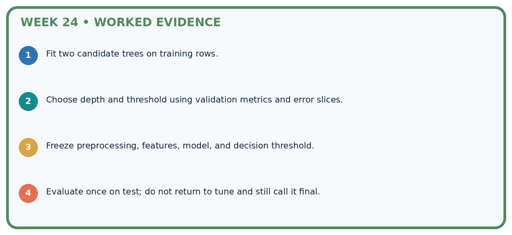
STEP 1 Fit two candidate trees on training rows.
STEP 2 Choose depth and threshold using validation metrics and error slices.
STEP 3 Freeze preprocessing, features, model, and decision threshold.
STEP 4 Evaluate once on test; do not return to tune and still call it final.
Recalculate, retrace, or restate the evidence independently:
A closer explanation
Validation and model selection at a glance
Learn from the worked case
Cover the result before checking it. Say what is given, choose the procedure, and follow one step at a time. Then uncover the result and explain your first mismatch. Ask why a step is allowed, not only what number it produces.
A pictorial worked case: Train, Validation, Test
Assign a separate job to training, validation and final test evidence.
The facts we will use
Candidates A and B have training MAE1 and 0 cm; validation MAE2 and 3 cm. Selection rule is smallest validation MAE.
All inputs and outcomes in this worked example are invented classroom data; no real model run is claimed.
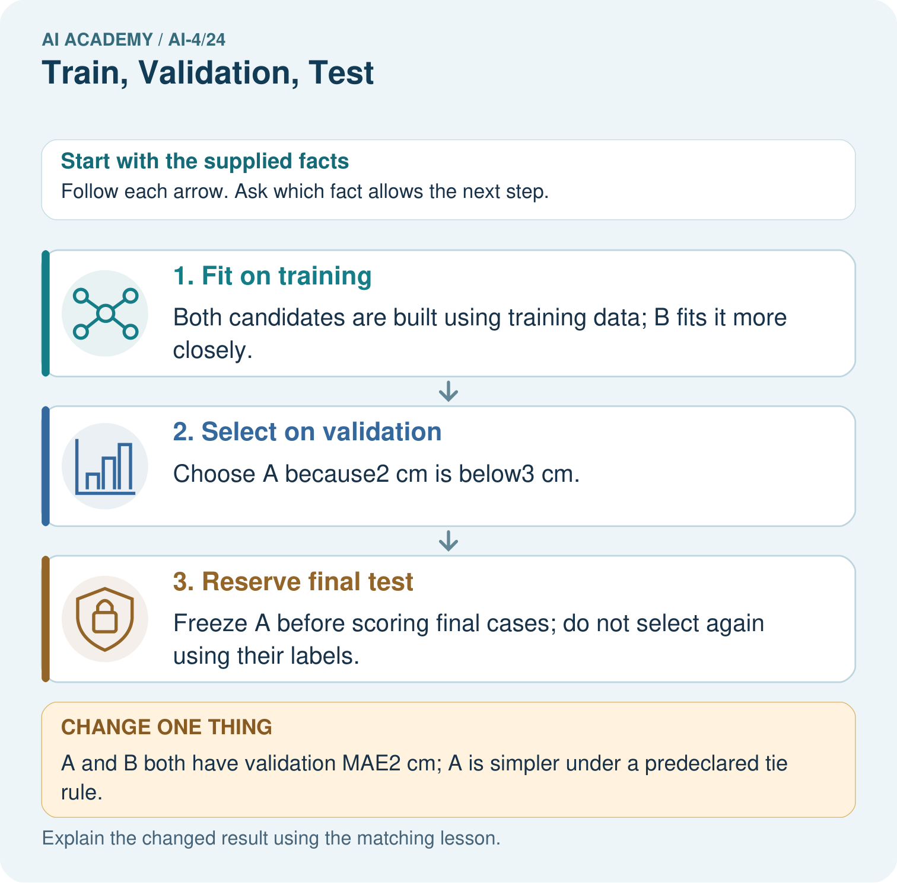
Read the picture one step at a time
Why this result follows
Read the picture in order. Freeze A before scoring final cases; do not select again using their labels. The arrows show which recorded input or intermediate result each decision uses. Explain the deciding step aloud before checking the changed case; pointing to the final answer alone does not show how it follows.
What this example does not establish
Repeated validation use can itself overfit model choices; keep a genuinely untouched final evaluation.
Student lesson · 7 of 14
Find and repair a mistake
ERROR DETECTIVE
Compare → Diagnose → Repair
Do not patch the answer. Find the earliest unsupported assumption, data problem, or experiment error.
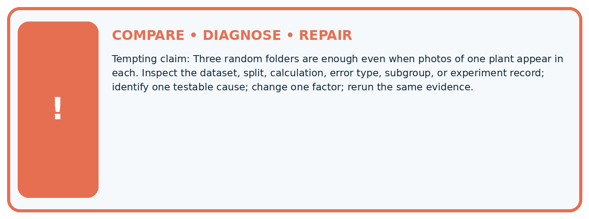
| Evidence record | Expected | Actual | Likely cause / next test |
|---|---|---|---|
| normal case | passes | ||
| boundary case | defined behavior | ||
| missing case | safe fallback | ||
| shifted case | measured limit |
Diagnose one cause and name the cleanest next experiment:
A closer explanation
A low score is meaningful only with its unit, metric, evaluated population and baseline. Decide how to handle ties and missing predictions before comparison. If no appropriate final test exists, state that limitation and keep claims about validation.
Student lesson · 8 of 14
Practise together
ML STUDIO
Specify Before You Run
A trustworthy result can be reproduced from the recorded data, code, settings, and evaluation rule.

Experiment record
QUESTION + intended use + success threshold
DATA version + grouped split + leakage check
CODE/preprocessing + features + model + settings + seed
METRICS + positive class + units + denominators
PREDICTIONS + errors + subgroup slices + limitations
HUMAN reviewer + release, revise, limit, or stop decision
Write the minimum record needed to reproduce today's result:
A closer explanation
If you inspect validation errors and invent candidate D, that is another development attempt. Log it. Repeated experiments can adapt to peculiarities of validation. Do not rename validation as an untouched test. More rows alone do not repair duplicated groups or future information leaking into inputs.
Practise with less help: Assign data roles
Use workbook W2 for the connected example “Validation and model selection”. First fill the input and rule boxes. Try the middle steps before asking for a hint. After a hint, try the next step yourself.
| Plan | Do | Check |
|---|---|---|
| What is given? Which rule or procedure applies? | Record each intermediate step. | Does the result follow? What remains unknown? |
Explain your trace to a partner. Your partner points to one step to check. Swap roles on the next case. Each person writes their own explanation.
Check your reasoning
Use the worked case for Validation and model selection. Proposed explanation: “A final answer is enough”. Decide whether this explanation is supported. Point to the step or supplied fact that decides; explain your repair if needed.
Answer on your own before discussion. If you are unsure, say which step you need help with.
Explain the picture
Why does B’s zero training MAE not settle the original choice? Point to the relevant step in the picture, then write the changed result and the rule or evidence that supports it.
This is supported practice. Keep the separately named independent case for an attempt before feedback.
Student lesson · 9 of 14
Run the investigation
EVIDENCE LAB
Predict → Run → Calculate → Interpret
Keep the test conditions fixed, record every result, and change only one planned factor.
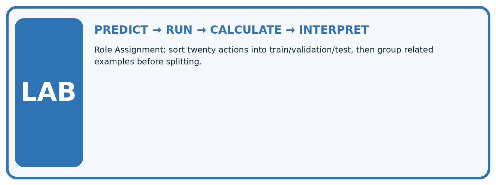
1. Write the hypothesis and expected evidence before running.
2. Role Assignment: sort twenty actions into train/validation/test, then group related examples before splitting.
3. Run one normal, one boundary, one missing, and one shifted case.
4. Calculate the metric from raw counts or row-level errors.
5. Interpret what changed, what did not, and what remains unsafe or unknown.
| Case | Prediction | Actual | Calculation / evidence | Meaning / next test |
|---|---|---|---|---|
| Normal | ||||
| Boundary | ||||
| Missing | ||||
| Shifted |
Plan → try → check
Before trying: what do I expect, and why? While trying: which step could first go wrong? Afterwards: what did I actually observe, and what should change? Keep “not run” if you only traced the procedure.
Student lesson · 10 of 14
Build your understanding
MASTERY
From Knowing the Word to Owning the Idea
Move upward only when you can produce evidence without copying the example.

DEFINE Use all four terms precisely: training set, validation set, test set, split strategy.
CALCULATE Reproduce the worked evidence with units and denominator.
TRACE Explain the data, code or decision path.
DIAGNOSE Three random folders are enough even when photos of one plant appear in each.
TRANSFER Solve a fresh dataset or model case.
IMPROVE Change one cause and rerun fixed evidence.
DEFEND State intended use, metric, limitation, and human responsibility.
Student lesson · 11 of 14
Connect your project
CUMULATIVE PROJECT
Responsible Plant Classifier
Every week adds one reviewable artifact to the same evidence-based capstone.
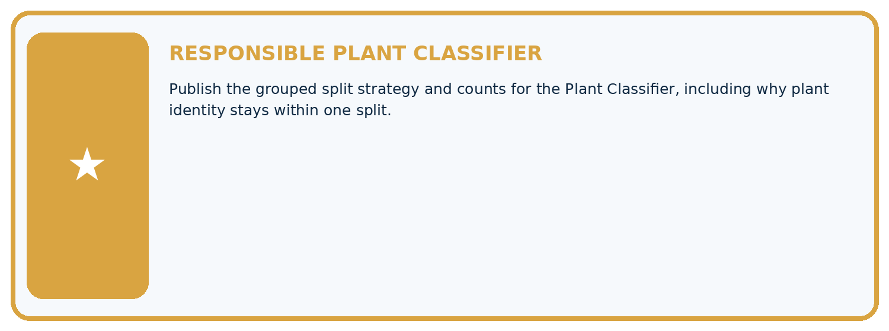
Which requirement or risk does this artifact address?
Which dataset, split, code, and metric version does it use?
What normal and shifted cases were tested?
What remains uncertain or weak?
What decision still belongs to a teacher or qualified human?
My evidence-linked project decision:
Evidence for your project
For your Responsible Plant Classifier, save the input, procedure, observed result and limitation of this check. Label this worked example as practice; use a different, previously unreviewed case when checking independent understanding.
Student lesson · 12 of 14
Show what you know
INDEPENDENT PROOF
Explain • Calculate • Transfer • Defend
Complete this with a fresh case after guided practice and compare it with the mastery criteria.
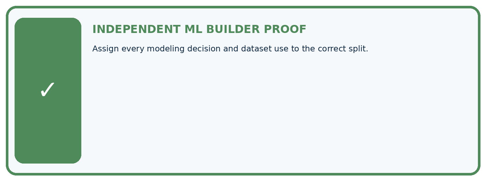
□ Define the task, feature/target roles, and intended-use boundary.
□ Show the calculation, code trace, or experiment record.
□ Test a normal case and one revealing boundary, missing, or shifted case.
□ Diagnose one failure without changing several factors at once.
□ Name a limitation, fairness concern, and the human-review action.
Independent evidence and defense:
My level: □ Not yet □ With one hint □ Independently □ I can teach and defend it
Student lesson · 13 of 14
Study a complete case
Week 24 Worked case
Use the supplied details to practise the weekly concept before attempting the independent question. This case extends the illustrated lesson.
The situation
Split 100 independent leaves into 60 train,20 validation,20 test.
The question
Explain roles and preprocessing.
Worked explanation
Train fits parameters and learned transforms; validation chooses settings; final test evaluates the selected system. Group related records first.
Explain it in your own words
Which detail supports the answer, and why does it matter?
Trace the supplied case visually
Three partitions have three different jobs
| Evidence or stage | Value or result |
|---|---|
| Train, fit parameters | 60 |
| Validation, choose settings | 20 |
| Test, evaluate selected system | 20 |
Split 100 independent leaves into 60 train,20 validation,20 test.
Explain roles and preprocessing.
Train fits parameters and learned transforms; validation chooses settings; final test evaluates the selected system. Group related records first.
Student lesson · 14 of 14
Try a new case independently
Independent case: Apply independently
Training errors P 2 Q 0 R 1; validation errors P 4 Q 6 R 4. Rule: smallest validation MAE, then simpler; P is simpler than R. Choose and state the test action.
Attempt this case before feedback. Record any help. Earlier examples below are further practice; a case already practised with feedback cannot establish fresh transfer.
Week 24 Independent application
Close the worked explanation. Apply the idea to this different question without copying.
Assign roles: set A fits model parameters; B selects between two models; C is opened once after choices are fixed. Which is train, validation and test?
My answer, with a trace, calculation or supporting evidence
Create and test
Change one relevant detail. Predict the result before testing. Include a boundary or missing-information case when it helps reveal a limit.
My changed input and expected result
Connect to your project
Publish the grouped split strategy and counts for the Plant Classifier, including why plant identity stays within one split.
The evidence I will keep
Your teacher has the independent answer and scoring criteria. Complete the matching workbook week to keep your practice evidence together.
Transfer practice from the original programme
You have 30 leaves with 3 views each. Allocate 18 leaves to train,6 to validation,6 to test. How many images are in each? Where is a learned normalisation mean fitted?
Use feedback to improve
Attempt the independent case before hints. Record whether you worked alone, used a hint or followed a model. After feedback, fix the first unsupported step and explain why it changed. A later check uses a changed case, not a copied answer.